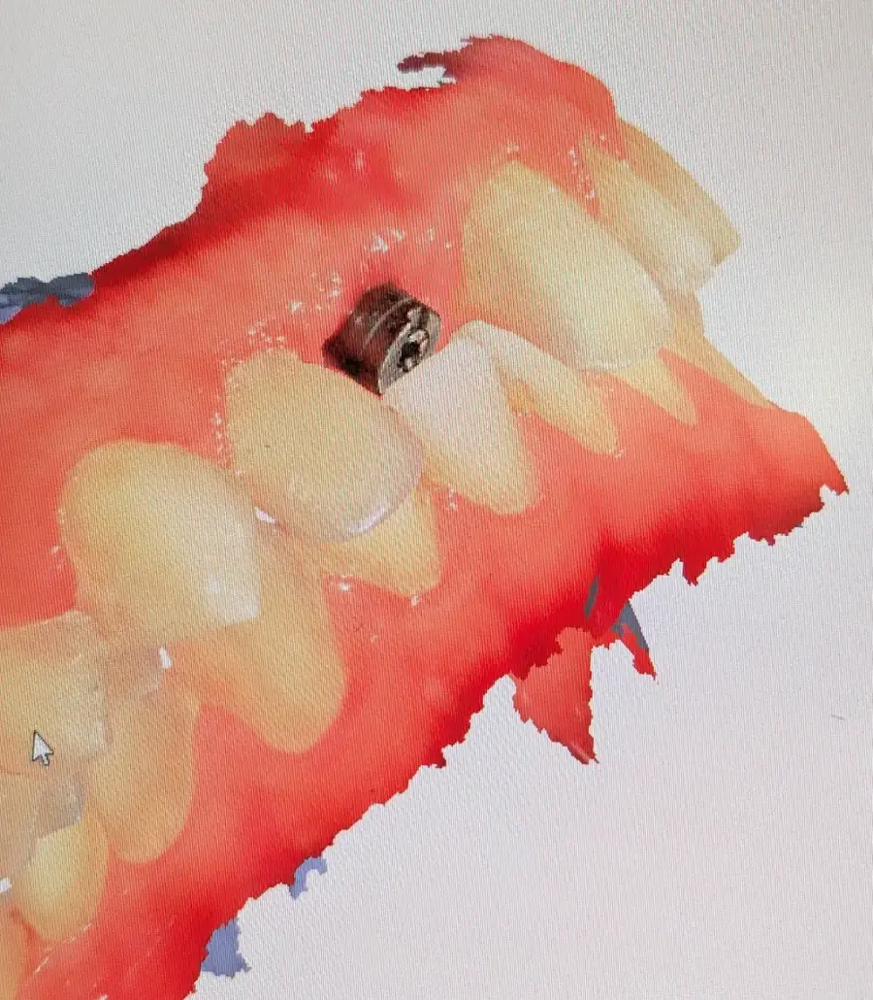

نسخه استخراجشده؛ ترجمه یا تأیید علمی انجام نشده است. وضعیت: captured
بیمار با Deep Bite شدید و ایمپلنت سانترال برای ارزیابی ارتودنسی ارجاع شده بود، ولی برای بررسی امکان مدیریت فضا بدون ارتودنسی مراجعه کرده است.

مهمترین چالش در بازسازی ایمپلنت سانترال، محدودیتهای ناشی از اکلوژن دیپبایت بود.
در بیماران Deep Bite، همیشه باید از ابتدا حواست باشد که امکان ساخت یک رستوریشن تمامسرامیک ایدهآل همیشه وجود ندارد و نباید دید تونلی داشت. اگر فضای فانکشنال ناکافی باشد:
این موضوع بخشی از تفکر اولیهی مدیریت فضا در چنین کیسهایی است؛ PFM با پالاتال فلزی از همان ابتدا در ذهن نگه داشته میشود.
به دلیل محدودیت فضا و نیاز به کنترل بهتر فضای موجود، رستوریشن پیچشونده انتخاب منطقیتری است. در این میان Ti-base ترجیح دارد، به این دلایل:
اگر بعد از انتخاب رستوریشن و اتصال، فضا هنوز کافی نباشد، اناملوپلاستی خفیف دندانهای قدامی پایین راهکار نهایی است. این مداخله:
این اصلاح کوچک میتواند فضای قابل قبول برای بازسازی پروتزی ایجاد کند، بدون اینکه نیاز باشد بیمار وارد پروسهی ارتودنسی کامل شود.
مسیر تصمیم در این بیمار: از ابتدا PFM با پالاتال فلزی بهعنوان راهحل مقاوم در ذهن نگه داشته شد؛ اتصال پیچشونده با Ti-base به دلیل دقت و کنترل بهتر انتخاب شد؛ و تنها در صورت نیاز، اناملوپلاستی خفیف قدامی پایین بهعنوان راهکار حمایتی به کار میرود.